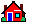

Ali's Blog
Home

About
 Contact
Contact
 Guestbook
Guestbook
 Blog Posts
Blog Posts
Hey there, welcome to my blog! Glad you could stop by. I've been doing some tinkering around these digital corners, and I'm thrilled to go live. There are a few things you can check out; blog posts lined up above, and more to come as I format and digitise them. Feedback is always welcome. Thanks again for your interest! I'm hoping you find something here that you like, and maybe even something you find slightly offensive! Oh, and don't forget to feed Zaki while youre here!
Back to Top